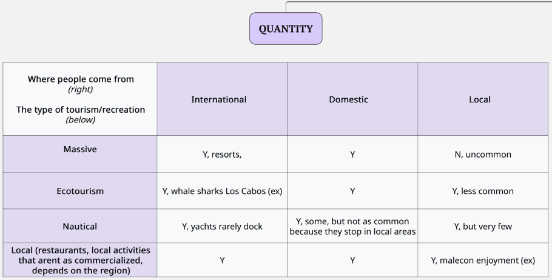

Turismo y Recreación
Turismo y Recreación
Esta meta captura la cantidad y calidad de experiencias que las personas tienen al visitar áreas costeras y marinas.
DEFINICIÓN CENTRAL
- Enfoque: Valor que las personas obtienen al experimentar y disfrutar las áreas costeras
- No trata de: Ingresos o medios de vida generados por el turismo (cubierto en Medios de Vida y Economías)
- Énfasis: Valor personal y cultural de las experiencias recreativas en zonas costeras
Preguntas Clave
¿Cuál es el estado sostenible ideal para la meta de turismo y recreación?
- ¿Cómo (idealmente) medimos la cantidad y calidad de la experiencia de las personas al visitar áreas costeras? ¿Deberían priorizarse ciertas experiencias?
- ¿Cómo definimos el punto de referencia?
- ¿Cómo incorporamos la sostenibilidad en la evaluación?
Reuniones de los Responsables de Meta
Acceso a la Reunión
Enlace Zoom: https://us06web.zoom.us/j/3255055973
Miembros Clave del Equipo
- Ana Luisa Figueroa
- Andrés Cisneros Montemayor
- Carmina Valiente
- Juan Carlos Villaseñor-Derbez
Horario de las Reuniones (lunes 9:00 AM - 10:00 AM PDT)
| Reunión | Fecha | Enfoque |
|---|---|---|
| 1 | 21 de julio de 2025 | Presentaciones del grupo, visión general de la plataforma OHI, cálculos de la meta, definir la meta |
| 2 | 18 de agosto de 2025 | Terminar de definir la meta, discutir la forma ideal de medirla y su estado ideal |
| 3 | 22 de septiembre de 2025 | Revisar cómo medir la meta y comenzar a definir las fuentes de datos de código abierto disponibles |
| 4 | 20 de octubre de 2025 | Resultados preliminares y, posiblemente, discusiones sobre presión/resiliencia |
| 5 | 17 de noviembre de 2025 | Revisión del plan de análisis final |
| 6 | 15 de diciembre de 2025 (tentativo) | Tentativo |
Información de Coautoría
Este proyecto ofrece oportunidades para colaborar con expertos regionales y contribuir a la evaluación OHI del Golfo de California. La participación será reconocida en la página web y otros productos. Pueden existir oportunidades adicionales de coautoría con compromiso extra, como se detalla aquí.
Calendario de Google
Agrega el calendario compartido a tu cuenta de Google Calendar usando el enlace proporcionado. Aparecerá bajo “Otros calendarios” y te dará acceso a todas las reuniones programadas con enlaces Zoom actualizados.
Por favor, avísanos si tienes alguna pregunta. ¡Esperamos trabajar contigo en esta iniciativa!
- Diapositivas de la Reunión #1 para repasar las ideas principales.
- Diapositivas de la Reunión #2, sobre la definición del objetivo TR.
- Diapositivas de la Reunión #3, sobre indicadores y fuentes de datos.
- Diapositivas de la Reunión #4
- Ideas para la Meta TR, donde puedes añadir tus pensamientos, ideas y posibles fuentes de datos en el documento colaborativo en curso.
Resumen de Reuniones
¡Gracias a todos los que se unieron a nuestra primera reunión de la Meta de Turismo y Recreación (TR)!
Fue un excelente inicio para nuestro trabajo conjunto en definir qué significa un turismo y recreación sostenibles para el Golfo de California.
Durante nuestra discusión, identificamos tres tipos principales de turismo en la región:
- Turismo Masivo – A menudo centrado en resorts de “sol y playa”, actividades de ocio y vida nocturna.
- Ecoturismo – Estructurado bajo categorías formales del gobierno, incluye turismo enfocado en la naturaleza y conservación.
- Turismo y Recreación Local – Actividades dirigidas por o para la comunidad y residentes locales.
También destacamos el Turismo Náutico — experiencias en el agua como navegación y tours marinos, a menudo enteramente en el mar. Este tipo podría ser su propia categoría o considerarse un subconjunto de los tres tipos principales mencionados. Esta sigue siendo una pregunta abierta que exploramos.
Además, hablamos sobre los orígenes del turismo:
- Internacional
- Nacional
- Local
Y generamos ideas para posibles medidas de:
- Cantidad: como número de hoteles, vuelos, veleros y visitas
- Calidad: como el sentimiento de los usuarios en reseñas de TripAdvisor o encuestas (ej. encuestas QR en accesos a playas — aunque esto está fuera del alcance actual del proyecto).
🌱 ¿Qué significa “Sostenibilidad” para TR?
Concluimos que la sostenibilidad en turismo debe reflejar:
- Impacto social positivo – como preservar la cultura local y beneficios para la comunidad
- Impacto ambiental positivo – incluyendo buena gestión de áreas protegidas y posibles mecanismos como brazaletes de conservación o tarifas diferenciadas para locales vs. nacionales
- Revisar las diapositivas introductorias TR para repasar las ideas principales.
- Revisar las Preguntas Clave en la pestaña “Sobre la Meta TR” y seguir generando ideas.
- Añadir tus pensamientos, ideas y posibles fuentes de datos al documento colaborativo.
En nuestra próxima reunión, continuaremos discutiendo cómo evaluar:
- Cantidad
- Calidad
- Sostenibilidad del turismo y recreación en el Golfo de California.
También comenzaremos a definir el punto de referencia para esta meta — nuestra visión de cómo debería ser un turismo y recreación ideales y sostenibles. En términos de evaluación, esta es la puntuación “100” — ¡nuestra meta A+!
A continuación se presentan algunos temas clave y hallazgos de la discusión de este mes sobre Turismo y Recreación. Aunque la participación fue limitada, la conversación aportó un valioso contexto, ejemplos e ideas nuevas para afinar nuestras metas e indicadores.
¿Qué hace que el turismo sea “saludable”?
Exploramos si el aumento de visitantes internacionales es automáticamente beneficioso para las comunidades locales. Si bien el turismo genera empleos, también existen desventajas en cuanto a presiones inmobiliarias y cambios en el estilo de vida. El grupo enfatizó que el crecimiento es positivo solo si:- las comunidades locales se benefician,
- los ecosistemas se mantienen sanos, y
- el uso se mantiene dentro de la capacidad de carga turística de la región (TCC).
- las comunidades locales se benefician,
Desarrollo inmobiliario y acceso
El desarrollo inmobiliario turístico impacta fuertemente tanto el bienestar comunitario como el acceso a la costa. En el Golfo de California, el acceso a las playas suele estar restringido por desarrollos turísticos u hoteles privados, a pesar de que la ley mexicana exige puntos de acceso público. Dar seguimiento a los patrones de propiedad y a los caminos de acceso puede ayudarnos a crear indicadores más sólidos.Tipos de turismo
Se distinguieron diferentes formas de turismo:- Internacional y nacional: Hoteles turísticos, turismo náutico (paseos en barco/yates) y la mayoría del ecoturismo.
- Local: Más vinculado a actividades cotidianas (restaurantes, visitas al malecón).
El turismo náutico en particular probablemente esté limitado a visitantes con mayores recursos, dado el costo y las restricciones de tiempo libre.
Ver borrador de la matriz de tipos de turismo abajo:

- Internacional y nacional: Hoteles turísticos, turismo náutico (paseos en barco/yates) y la mayoría del ecoturismo.
Impactos socioeconómicos
Los empleos de mayor calidad en el turismo (ej: guías, operadores, dueños de negocios) a menudo son ocupados por foráneos en lugar de residentes locales. Aunque sí se están viendo avances, con más jóvenes locales incorporándose al sector, sigue siendo un área clave a monitorear para asegurar que los beneficios se distribuyan de manera equitativa.Capacidad de carga y sostenibilidad
El uso de recursos, en particular agua y energía, resalta las inequidades entre los desarrollos turísticos y los hogares locales. Evaluar la sostenibilidad requerirá equilibrar el número de visitantes con una distribución justa de los recursos esenciales.Posible marco de indicadores:
El grupo sugirió estructurar los indicadores en tres subcomponentes:- Cantidad (número de visitantes, tipos de turismo)
- Calidad (oportunidades de empleo, beneficios locales)
- Sostenibilidad (uso de recursos, impactos ecológicos, impactos culturales)
- Cantidad (número de visitantes, tipos de turismo)
También se señaló que algunas certificaciones (como las playas con distintivo Blue Flag) pueden aplicarse principalmente a zonas de turismo de alto volumen, lo cual podría influir en la manera en que se enmarcan los indicadores de sostenibilidad.
Recursos Compartidos
Próximos Pasos
Estaremos discutiendo el marco de indicadores (Cantidad, Calidad, Sostenibilidad), así como los indicadores ideales para reflejar la intención de esta meta. Por favor prepárense para discutir indicadores de cantidad, calidad y sostenibilidad para cada tipo de turismo.
¡Gracias, y estén pendientes de la agenda para la Reunión #3!
¡Gracias a todas y todos por asistir a la tercera reunión del grupo Tourism & Recreation Goalkeeper!
En esta reunión, trabajamos en conjunto para identificar indicadores y sus posibles fuentes de datos para los tres componentes de TR: Cantidad, Calidad y Sostenibilidad.
El objetivo de TR “captura la cantidad, calidad y sostenibilidad de las experiencias que tienen las personas al visitar zonas costeras y marinas.”
Como grupo, discutimos posibles fuentes de datos y referencias técnicas para cada indicador de TR.
A continuación se presenta una síntesis de nuestra discusión y de la Actividad en la que participamos de manera colectiva, ubicada en el documento de Ideas del TR Goalkeeper bajo la pestaña:
Cantidad
Las fuentes más consistentes y accesibles en las regiones de OHI son:
- Programa de Monitoreo de la Actividad Hotelera
- DataTur de SECTUR (llegadas de turistas y pernoctaciones)
- Datos de SEMAR sobre llegadas de cruceros y volúmenes de pasajeros
También discutimos fuentes locales como:
- Asociaciones de marinas para ocupación de embarcaciones (ej: Marina San Carlos)
- Autoridades portuarias (# de embarcaciones con permisos para turismo y recreación, obtenidos vía solicitudes de transparencia)
- CONANP cobro de derechos de visitantes (como proxy de visitas a áreas naturales protegidas costeras)
El ecoturismo resulta más difícil de cuantificar, pero algunos indicadores potenciales incluyen:
- Número de empresas de ecoturismo (INEGI registro de unidades económicas)
- Ocupaciones relacionadas con ecoturismo en INEGI como proxy del número de ecoturistas (INEGI ENOE)
- Número de ecoturistas marinos, sitios de buceo SCUBA (Investigación publicada, ej. Favoretto y Schuhbauer)
Calidad
Identificamos indicadores tanto de infraestructura como de percepción:
- Tasa de retorno, mejor que la duración de estancia (encuestas estatales de satisfacción de visitantes)
- Densidad de servicios/actividades cercanas a la costa (INEGI DENUE)
- Percepciones sociales de seguridad (Índice de Paz México)
Sostenibilidad
Distinguimos entre aspectos ambientales y sociales.
Posibles indicadores de sostenibilidad ambiental:
- Peso relativo del ecoturismo frente al turismo masivo (expandiendo oportunidades de ecoturismo, considerando que cuando se hace bien, es el estándar de oro en prácticas turísticas)
- Medidas de certificación o gestión (como las distinciones de playas Blue Flag)
- Cambio en uso de suelo (áreas de conservación prioritaria convertidas en desarrollos turísticos → requiere solicitudes de transparencia para acceso a datos)
Posibles aspectos de sostenibilidad social:
- Calidad de los empleos turísticos locales (INEGI ENOE para evaluar calidad de empleo, como beneficios, salario)
- Que los beneficios del turismo permanezcan dentro de las comunidades (se requieren indicadores específicos para esto)
- Igualdad de género en las oportunidades laborales del turismo
Si bien existen bases de datos sólidas para el conteo básico de visitantes, será necesario utilizar combinaciones más creativas de proxies, encuestas estatales, solicitudes de transparencia e investigación internacional para capturar la totalidad del objetivo TR.
El reto es equilibrar disponibilidad y rigor evitando supuestos excesivamente normativos, especialmente en lo referente a la calidad de la experiencia.
¡Este es un gran inicio para que el equipo central de OHI continúe explorando estos indicadores y sus fuentes potenciales de datos!
Estaremos identificando puntos de referencia para los indicadores dentro de Cantidad, Calidad y Sostenibilidad.
Un ejemplo de las discusiones que tendremos:
- Si el indicador de cantidad de turismo es “número de llegadas de turistas”, ¿el punto de referencia debería reflejar la meta del Plan México de incrementar el turismo internacional en 40% para 2030?
- Algunas metas para 2030 del Plan México:
- Impacto económico de turistas internacionales aumentó en 46%.
- Cuartos de hotel en 12%.
- Generación de empleo turístico en 27%.
- Participación del turismo en el PIB en 9%.
- Turismo doméstico en 9.8%.
- Número de prestadores de servicios certificados en sostenibilidad en 31.5%.
- Gasto promedio por turista internacional en 3.3%.
- Llegada de visitantes internacionales en 30%.
- Recaudación de derechos (DNR) en 40.5%.
- Impacto económico de turistas internacionales aumentó en 46%.
- Algunas metas para 2030 del Plan México:
- ¿O debería el número de turistas relacionarse con la población local del área (turistas : habitantes en centros turísticos)?
- En ese caso, el punto de referencia podría ser:
- Histórico (ej. la proporción en 2019 entre turistas y locales, con la meta de mantenerla estable), o
- Teórico/Definido por expertos (lo que ustedes, como expertos, consideren ideal para el GoCA).
- Histórico (ej. la proporción en 2019 entre turistas y locales, con la meta de mantenerla estable), o
- En ese caso, el punto de referencia podría ser:
Por favor vengan preparados para discutir este tipo de preguntas en cuanto a:
- Cantidad
- Calidad
- Sostenibilidad ambiental
- Sostenibilidad social
¡Gracias, y estén atentos a la agenda de la Reunión #4!
Que tengan un excelente resto de mes, y no duden en comunicarse por correo electrónico o añadir comentarios en el documento TR Goalkeeper si tienen dudas o aportaciones.
Gracias a todas y todos quienes pudieron asistir. A pesar de la baja participación, avanzamos en la discusión de los indicadores de Cantidad y Calidad.
Si no pudieron asistir, por favor revisen la presentación actualizada:
Diapositivas de la Reunión #4 de TR
Resumen de la Reunión
1. Indicadores de Cantidad
Nos enfocamos en los dos indicadores propuestos para el componente de Cantidad de TR:
- Llegadas de Turistas (SECTUR)
- Incluye turistas nacionales e internacionales.
- Algunas regiones del OHI no tienen datos porque no forman parte de los centros turísticos monitoreados por SECTUR.
- Incluye turistas nacionales e internacionales.
- Personas Empleadas en Servicios de Alojamiento (INEGI DENUE)
- Funciona como un proxy alternativo para estimar la presencia turística donde no hay datos de centros turísticos.
- Evaluaremos si existe una relación entre llegadas de turistas y personas empleadas en el sector de alojamiento. Si la relación es estable, podría ayudarnos a llenar vacíos de datos en la zona centro del Golfo.
- Funciona como un proxy alternativo para estimar la presencia turística donde no hay datos de centros turísticos.
2. Indicadores de Calidad
Revisamos los indicadores actuales de Calidad y los próximos pasos para recopilar datos:
- Tasa de Retorno / Satisfacción del Visitante
- Basado en encuestas de satisfacción a nivel municipal o estatal.
- Actualmente los datos están incompletos; no hemos recibido las respuestas necesarias de solicitudes de transparencia, por lo que este indicador podría no ser realista.
- Basado en encuestas de satisfacción a nivel municipal o estatal.
- Delitos que Afectan a Turistas
- Enfoque posible: tasa de delitos por persona (per cápita), donde menos delitos aumentan la calidad.
- El punto de referencia sería cero delitos per cápita.
- Necesitamos definir qué delitos del SESNSP consideraremos como “afectando a turistas”.
- Enfoque posible: tasa de delitos por persona (per cápita), donde menos delitos aumentan la calidad.
- Disponibilidad de Actividades y Servicios de Alimentos (DENUE)
- Conteo de establecimientos de alimentos, recreación, cultura y servicios relacionados, relativo al número de turistas.
- Se discutió la posibilidad de incorporar servicios vinculados al ecoturismo si fuera factible.
- CONANP respondió con datos de cobro de derechos (2012–2024), que podríamos usar para estimar visitas a áreas naturales protegidas.
- Conteo de establecimientos de alimentos, recreación, cultura y servicios relacionados, relativo al número de turistas.
3. Indicadores de Sostenibilidad (no discutidos en la reunión)
Aunque no alcanzamos este tema durante la reunión, las diapositivas incluyen un panorama de posibles indicadores de Sostenibilidad, tales como:
- Distintivo S y otras certificaciones de sostenibilidad para hoteles y establecimientos turísticos
- Participación en ecoturismo y diversidad de actividades
- Dimensiones ambientales y sociales (uso de recursos, calidad del empleo local, equidad de género)
- Visitas a áreas naturales protegidas, permisos de embarcaciones y otras fuentes potenciales de datos
Como no tuvimos tiempo para discutir estos indicadores, invitamos a todas y todos a revisar la sección de Sostenibilidad en las diapositivas para ver detalles y ejemplos visuales.
Próximos Pasos
- Finalizar las opciones de puntos de referencia para los indicadores de Calidad.
- Seguir explorando los datos sobre disponibilidad de actividades para determinar el punto de referencia adecuado.
- Revisar la sección de Sostenibilidad de las diapositivas de la Reunión #4 para prepararse para una discusión más profunda.
- La Reunión #5 presentará puntajes preliminares de estado actual para: Cantidad, Calidad y Sostenibilidad.
¡Muchas gracias a todas y todos — especialmente en una temporada tan ocupada — y por favor sigan agregando preguntas o ideas al documento compartido de TR!
Manténganse al tanto para más recursos de la Reunión #5.
Perspectivas y Ejemplos Adicionales
Estos son algunos puntos discutidos por el Grupo de Trabajo de Expertos.
Tipos de Turismo mencionados:
- Turismo Masivo:
Desarrollos a gran escala promovidos por el gobierno
- Turismo Comunitario:
Incluye esfuerzos como:- AMP de resiliencia con comunidades isleñas
- Colaboración con CONAP
- Iniciativas lideradas por comunidades en Guaymas
- AMP de resiliencia con comunidades isleñas
- Ecoturismo:
Incluso esfuerzos liderados por ONG pueden causar daños no intencionados
Problemas clave identificados:
- Promoción gubernamental: Fuerte impulso para turismo a gran escala en todo el Golfo
- Regulación ambiental: Regulación débil, especialmente en desarrollo de playas
- Impacto comunitario:
- Necesidad de equilibrar beneficios económicos (ej. empleos) con costos sociales y ambientales
- Resaltar alternativas al turismo masivo
- Necesidad de equilibrar beneficios económicos (ej. empleos) con costos sociales y ambientales
Consideraciones adicionales:
- Creación de empleo vs. costos sociales
- Beneficios locales vs. externos
- Impacto cultural
- Crimen organizado
- Estabilidad social (ej. problemas relacionados con drogas, ruptura institucional)
| Tipo de punto de referencia | Ejemplo |
|---|---|
| Objetivos definidos por el gobierno | Incrementar turismo en 20% para 2050 |
| Preferencias locales + | Deseo de playas tranquilas vs. concurridas |
| Capacidad de carga | Maximizar turismo relativo a la capacidad de carga |
| Niveles estables de turismo | Sin pérdidas o ganancias netas en turismo a lo largo del tiempo |
| Comparaciones de densidad turística | Comparar turistas/km² con otras regiones |
+ A menudo existe una tensión política: los gobiernos promueven turismo para empleos, mientras las comunidades experimentan impactos sociales y ambientales